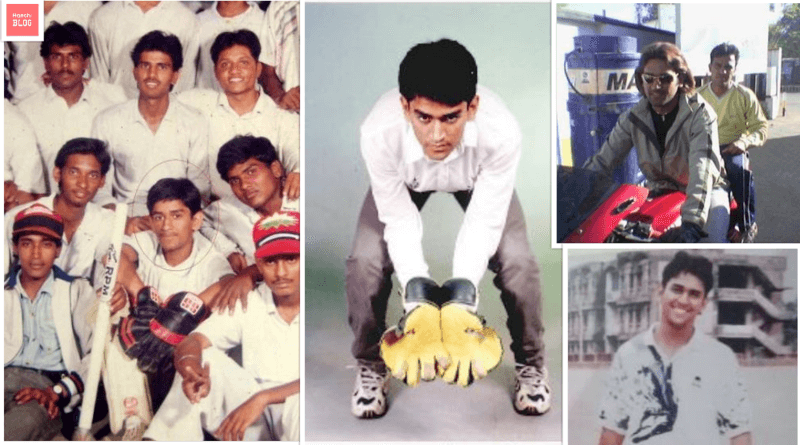

|
Born in Ranchi, Dhoni made his first class debut for Bihar in 1999. He made his debut for the Indian cricket team on 23 December 2004 in an ODI against Bangladesh and played his first test a year later against Sri Lanka. In 2007, he became the captain of the ODI side before taking over in all formats by 2008. Dhoni retired from test cricket in 2014, but continued playing in limited overs cricket till 2019. He has scored 17,266 runs in international cricket including 10,000 plus runs at an average of more than 50 in ODIs. In the Indian Premier League (IPL), Dhoni plays for Chennai Super Kings (CSK), leading them to the final on ten occasions and winning it five times (2010, 2011, 2018, 2021 and 2023). He has also led CSK to two Champions League T20 titles in 2010 and 2014. Dhoni is amongst the few batsmen to have scored more than five thousand runs in the IPL, as well as being the first wicket-keeper to do so. In 2008, Dhoni was awarded India's highest sport honor Major Dhyan Chand Khel Ratna Award by Government of India. He received the fourth highest civilian award Padma Shri in 2009 and third highest civilian award Padma Bhushan in 2018. Dhoni holds an honorary rank of Lieutenant Colonel in the Parachute Regiment of the Indian Territorial Army which was presented to him by the Indian Army in 2011. He is one of the most popular cricketers in the world. |
Early life
Dhoni was born on 7 July 1981 in Ranchi, Bihar (now in Jharkhand) in a Hindu Rajput family to Pan Singh and Devaki Devi. [4] His parents hailed from Lwali village in Uttar Pradesh (now Uttarakhand) and he was the youngest of three children.[5][6][7] His family spells the surname as "Dhauni".[8]
Dhoni did his schooling at DAV Jawahar Vidya Mandir where he started playing football as a goal keeper but later moved to play cricket on the suggestion of his coach Keshav Banerjee.[9][10] From 2001 to 2003, Dhoni worked as a Travelling Ticket Examiner (TTE) at Kharagpur under South Eastern Railway zone of Indian Railways.[11][12]
Early career
|
He played as a wicket-keeper for Commando cricket club from 1995 to 1998 and Central Coal Fields Limited (CCL) team in 1998.[13] At CCL, he batted higher up the order and helped the team qualify to the higher division.[14] Based on his performance at club cricket, he was picked for the 1997/98 season of Vinoo Mankad Trophy under-16 championship.[15][16] In the 1998–99, Dhoni played for Bihar U-19 team in the Cooch Behar Trophy and scored 176 runs in 5 matches. In the 1999–2000 Cooch Behar Trophy, the Bihar U-19 cricket team made it to the finals, where Dhoni made 84 in a losing cause.[17] Dhoni's contribution in the tournament included 488 runs in nine matches with five fifties, 17 catches and seven stumpings.[18] Dhoni made it to the East Zone U-19 squad for the C. K. Nayudu Trophy in the 1999–2000 season and scored only 97 runs in four matches, as East Zone lost all the matches and finished last in the tournament.[19][20] Dhoni made his Ranji Trophy debut for Bihar against Assam in the 1999–2000 season, as an eighteen-year-old scoring 68 runs in the second innings.[21] Dhoni finished the season with 283 runs in 5 matches. Dhoni scored his maiden first-class century while playing for Bihar against Bengal in the 2000–01 Ranji Trophy season.[22] Apart from this century, his performance in the 2000/01 season did not include another score over fifty and in the 2001–02 Ranji Trophy season, he scored just five fifties in four Ranji matches.[23][24] Dhoni's played for Jharkhand in the 2002–03 Ranji Trophy and represented East Zone in the Deodhar Trophy where he started gaining recognition for his lower-order contribution as well as hard-hitting batting style. In the 2003/04 season, Dhoni scored a century (128*) against Assam in the first match of the Ranji ODI tournament and was part of the East Zone squad that won the Deodhar Trophy 2003–2004 season scoring 244 runs in four matches.[25][26] In the Duleep Trophy finals, Dhoni represented East zone and scored a fighting half-century in the second innings in a losing cause.[27] Dhoni was identified as one of the emerging talents via the BCCI's small-town talent-spotting initiative TRDW.[28][29] In 2004, Dhoni was picked for the India A squad for a tour of Zimbabwe and Kenya.[30] Against the Zimbabwe XI in Harare Sports Club, Dhoni effected seven catches and four stumpings.[31] In the tri-nation tournament involving Kenya, India A and Pakistan A, Dhoni helped India A chase down their target of 223 against Pakistan A with a half-century and scored scored 362 runs in six innings at an average of 72.40 with back to back centuries.[32][33][34] |
 |
International career
The Indian ODI team in the early 2000s saw Rahul Dravid as the wicket-keeper to ensure that the wicket-keeper spot didn't lack in batting talent and also tried other wicket-keeper/batsmen like Parthiv Patel and Dinesh Karthik.[35] With Dhoni performing well for the India A squad, he was picked in the ODI squad for the Bangladesh tour in December 2004.[36] Dhoni made his debut in the first match of the series and was run out for a duck.[37] Dhoni was picked for the subsequent ODI series against Pakistan.[38] In the second match of the series in Visakhapatnam, Dhoni playing in his fifth one-day international, scored 148 runs off 123 deliveries which surpassed the earlier record for the highest score by an Indian wicket-keeper.[39] Dhoni played in the Sri Lankan bilateral ODI series in October–November 2005 and was promoted to No. 3 in the batting order in the third ODI at Jaipur where he scored an unbeaten 183 runs off 145 balls, winning the game for India.[40] The innings would surpass his earlier record for the highest score by an Indian wicket-keeper and was described in Wisden Almanack as 'Uninhibited, yet anything but crude'.[41] It was also the highest individual score in ODI cricket in a run chase, a record which was broken seven years later by Shane Watson.[42][43] Dhoni ended the series with the highest aggregate of 346 runs and was awarded the Man of the series.[44]
 |
In the DLF Cup 2006-07, Dhoni scored 43 runs as the team lost twice in three games and did not qualify for the finals. In the 2006 ICC Champions Trophy, India lost to West Indies and Australia, though Dhoni scored a half-century against West Indies and failed to make it to the knock out stage.[53] In the ODI series in South Africa in November 2006, Dhoni scored 139 runs in four matches in the series loss.[45] In the test series that followed, Dhoni scored 114 runs in two tests including a first test victory in South Africa in the first test, but was ruled out of the third test with injury.[54] Dhoni made his T20 international debut in December 2006 against South Africa at Johannesburg.[55] Dhoni was subsequently named in the ODI team of the year by the ICC for 2006.[56] |
2007 World T20 and captaincy
India recorded identical 3–1 victories over West Indies and Sri Lanka in early 2007 with Dhoni averaging in excess of 100 in both the series. Subsequently, Dhoni was part of the squad for 2007 Cricket World Cup in which India unexpectedly crashed out in the group stage after losses to Bangladesh and Sri Lanka with Dhoni scoring ducks in both these matches and just 29 runs in the tournament.[45][57] As a result, Dhoni's house in Ranchi was vandalized and damaged by activists of JMM and security was tightened for his family.[58] Dhoni scored 91* against Bangladesh in the first match of the ODI series in May 2007 which fetched the Man of the Match award while also later winning the Man of the Series after the third game of the series was washed away.[59] Dhoni played for ACC Asia XI cricket team in the Afro-Asia Cup, scoring 174 runs in three matches at an average of 87 including 139 off 97 balls in the third ODI.[60]
Dhoni was named vice-captain of the ODI team for the 2007 Future Cup against South Africa in Ireland and the subsequent seven-match series against England.[61] Dhoni was awarded an 'A' grade contract by BCCI in June 2007. Dhoni was appointed as the captain of the Indian squad for the inaugural World Twenty20 in September 2007. Dhoni led India to victory in the tournament after defeating Pakistan in the final. Dhoni was appointed as the captain of Indian cricket team in all formats later.
On 2 September 2007, Dhoni equaled Adam Gilchrist's international record for the most dismissals in an innings in ODI by effecting six dismissals against England. Dhoni took his first and only wicket in international cricket on 30 September 2009 when he bowled Travis Dowlin of West Indies in the 2009 ICC Champions Trophy. However, he scored just three runs in the only match he batted with India crashing out of the series in the group stage after the match against Australia was washed out. Dhoni averaged more than 60 in the 2008-09 season. Dhoni scored two centuries during Sri Lanka's tour of India in November 2009 which India won to achieve the top ranking in ICC test ranking for the first time in its history. Dhoni had an excellent year in ODIs in 2009, scoring 1198 runs in just 24 innings, at an average of 70.43 and topped the ICC ODI batsman rankings for several months. He was named as captain and wicket-keeper of the ICC ODI Team of the year.
2011 World Cup win and later
Dhoni led the Indian squad for the 2011 Cricket World Cup co-hosted by India. India won its second ever ODI world cup after defeating Sri Lanka in the final with Dhoni being named man of the match for scoring an unbeaten 91. In December 2012, Pakistan toured India for a bilateral series for the first time in five years and Dhoni top-scored in all the three matches of the series with a century in the first ODI at Chennai. Dhoni led India to victory in the 2013 ICC Champions Trophy and became the first and the only captain in international cricket to claim all ICC limited overs trophies. In the rain-shortened final against England, India won by five runs on DLS method though Dhoni himself was out for a duck. He was also named as captain and wicket-keeper of the 'Team of the Tournament' by the ICC.
After the Champions Trophy, India toured West Indies for a tri-nation tournament against the hosts and Sri Lanka. Dhoni got injured at the start of the tournament thus ruling him out for most of the tournament and returned to play the final where he was adjudged Man of the match for scoring 45 runs off 52 balls including 16 runs in the final cricket to take India to victory by one wicket. In November 2013, Dhoni became the second India batsman after Sachin Tendulkar to aggregate more than thousand runs in ODIs against Australia. India toured South Africa and New Zealand in the 2013–14 season. Though Dhoni scored 84 runs at an average of 48 including one half-century against South Africa and 272 runs with three consecutive 50-plus scores against New Zealand, India lost both the series.[45] Dhoni himself reached 8000 runs in ODI in the series against New Zealand. Dhoni led India in the 2014 ICC World Twenty20 where India finished as runners-up after losing to Sri Lanka in the final. He was named as captain and wicket-keeper of the 'Team of the Tournament' by the ICC.
India won the away ODI series in England in 2014 and series against West Indies in India where Dhoni scored 146 runs across the five innings he batted.